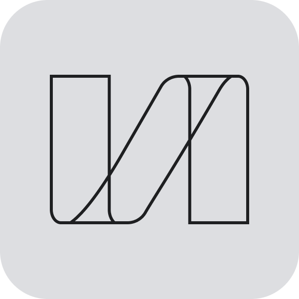

Tasks
Priority actions
Card surface, header, and metric chip used across the prototype dashboard.
Nexus People OS
Tokens and primitives from the Career Coach Agent prototype. Refine here, then integrate
into the app via dist/nexus-ds.css.
Brand

Nexus
Agent icons
Buttons & composer
Status pills
Panel
Tasks
Card surface, header, and metric chip used across the prototype dashboard.